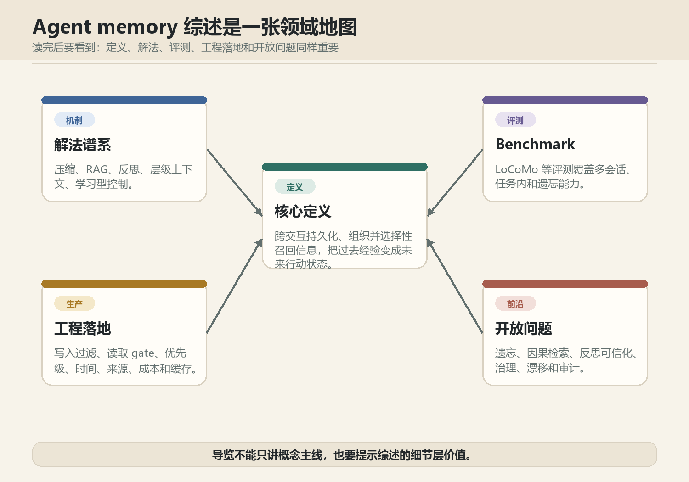
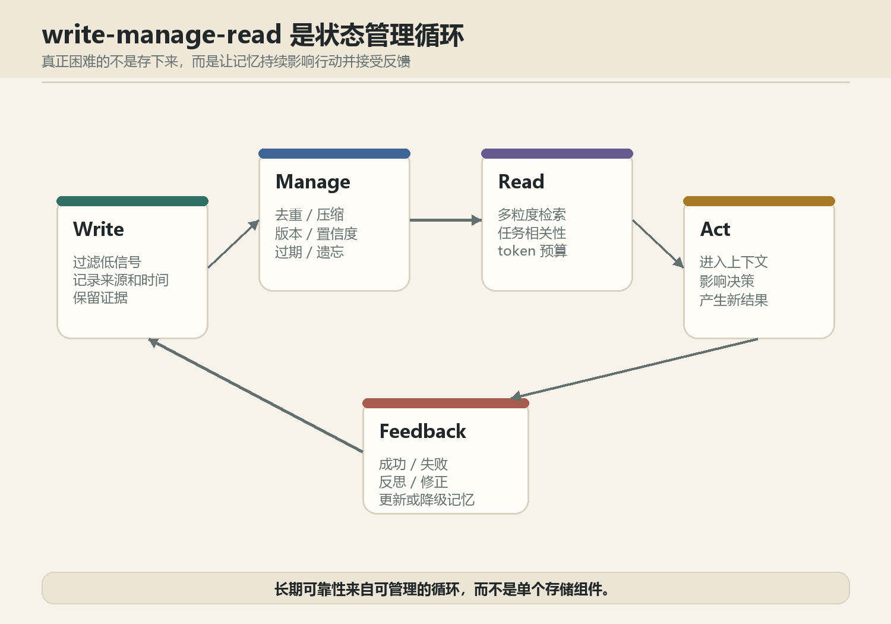
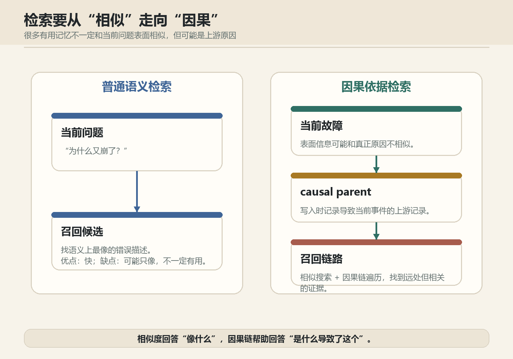
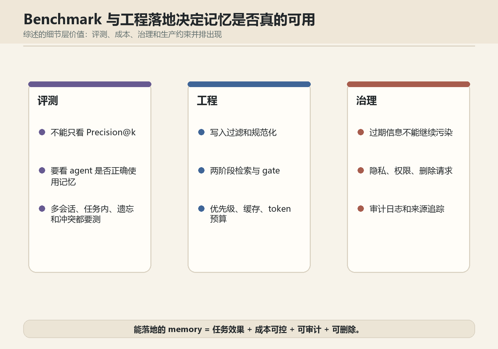
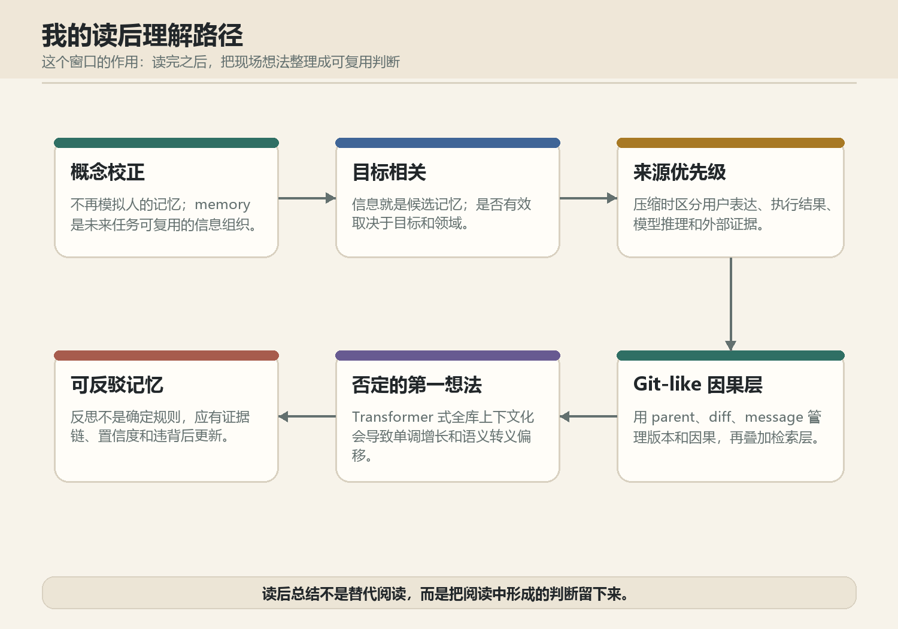

Agent 记忆阅后导览
这版导览从预读直觉修正为阅后总结：既保留论文的领域地图，也把阅读过程中形成的个人判断整理出来。
最重要的修正：这篇综述的价值不只在 memory 定义，而在于同时整理了解法谱系、benchmark、工程落地方式和开放问题。
概念校正
Agent memory 不是模拟人的记忆，而是面向目标的有效信息组织。
Agent memory 不是模拟人的记忆，而是面向目标的有效信息组织。
工程张力
可靠记忆系统要同时处理压缩、检索、更新、遗忘、治理和成本。
可靠记忆系统要同时处理压缩、检索、更新、遗忘、治理和成本。
读后作用
读完之后要总结自己的理解路径，而不是只留下泛读版摘要。
读完之后要总结自己的理解路径，而不是只留下泛读版摘要。
01 综述是一张领域地图

02 write-manage-read 生命周期

03 检索要从相似走向因果

04 benchmark 与工程落地

05 我的读后理解路径
